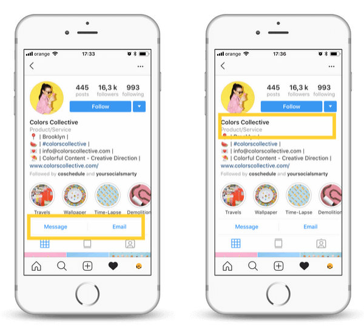

An Instagram business profile is a free feature that Instagram offers to brands that want their accounts to be recognized as businesses. These business profiles offer additional features compared to a personal profile, such as Instagram analytics, ad targeting, a contact button, and more.
